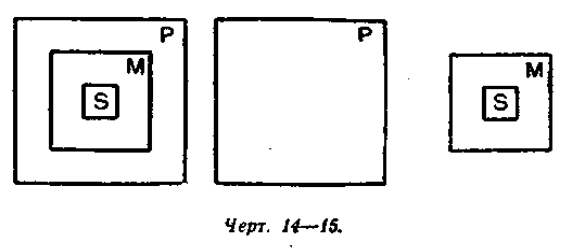
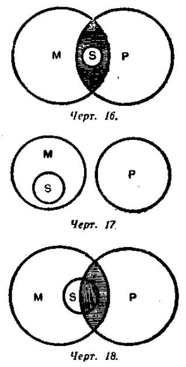
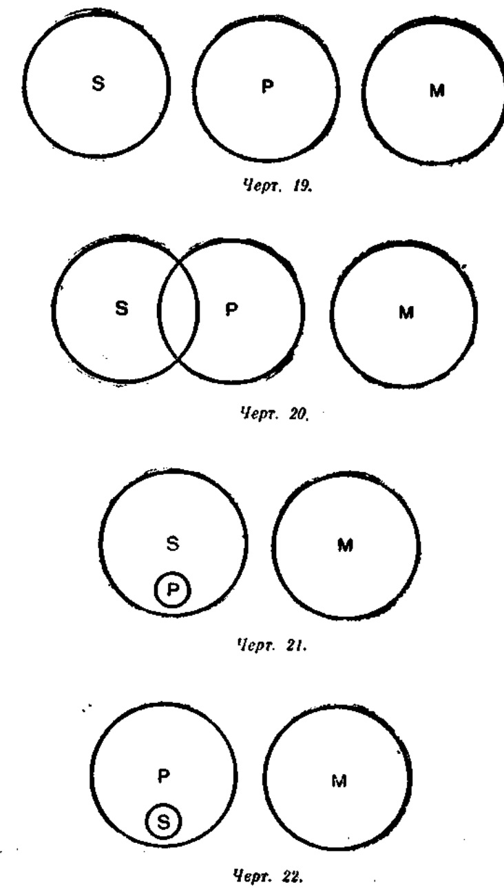
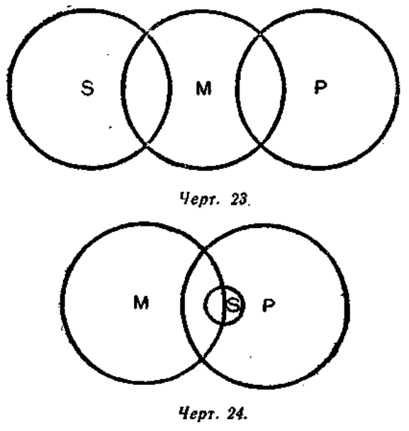
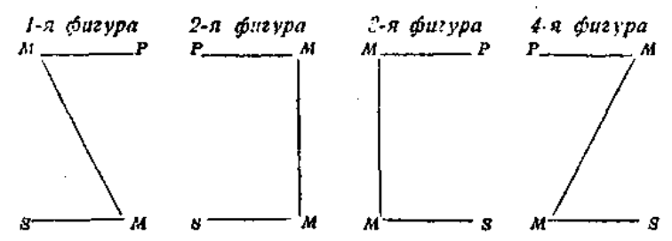

Глава VIII. ДЕДУКТИВНЫЕ УМОЗАКЛЮЧЕНИЯ
Редакционное примечание. Текст главы адаптирован для современного читателя: исправлены артефакты распознавания, унифицирована разметка, сокращены идеологически перегруженные фрагменты, не влияющие на понимание логического содержания.
§ 1. Понятие об умозаключении
Знание об окружающей нас действительности мы получаем в форме суждений, понятий, а также в форме умозаключений. Умозаключение, как и другие формы мышления, является отображением в вашем сознании материальной действительности. Поэтому оно, как и другие формы мышления, и может служить средством познания действительности.
Но умозаключение отличается от суждений и понятии по своему строению.
Рассмотрим следующий пример.
Давно было известно, что железо отклоняет магнитную стрелку компаса. Затем стало известно также, что магнитная стрелка компаса значительно отклоняется от меридиана, когда компас находится в районе г. Курска. Зная всё это, специалисты сделали правильный вывод: в районе г. Курска имеются залежи железной руды. Проведённые исследования подтвердили правильность этого вывода.
Таким образом, имея знание о том, какое влияние оказывает железо на магнитную стрелку, и о том, что магнитная стрелка отклоняется вблизи г. Курска, люди сделали правильный вывод, т. е. получили новое знание.
Это и есть умозаключение.
Другой пример: у меня в руках кусок какого-то вещества, природа которого мне пока неизвестна; я рассматриваю это вещество и по ряду признаков убеждаюсь, что это янтарь. Ранее мной было получено знание о том, что янтарь неэлектропроводен. Я делаю вывод: вещество, которое у меня в руках, — неэлектропроводно.
Это и будет умозаключение.
В своей повседневной практической деятельности мы постоянно умозаключаем.
Причём вывод всегда будет правильным, если было верно исходное знание и если мы правильно построили умозаключение, т. е. в соответствии с требованиями логических законов.
Поскольку наши знания существуют в форме понятий, суждений (а понятия входят в состав суждений), то умозаключение можно определить так:
Умозаключение — это такое логическое действие, посредством которого из двух или нескольких суждений мы получаем новое суждение.
Чтобы получить вывод из суждений, надо эти суждения определённым образом связать. Из случайного ряда суждений вывода сделать нельзя. Нельзя, например, сделать вывода из таких двух суждений: «Все тюлени — животные», «Все киты — морские млекопитающие», так как между этими суждениями нет логической связи. Но в практике мышления встречаются значительно более сложные случаи. Разобраться в таких случаях помогает знание правил умозаключений.
Умозаключения бывают дедуктивные, когда мысль идёт от общего к частному, и индуктивные, когда мысль идёт от частного к общему. Могут быть также умозаключения от частного к частному.
§ 2. Определение силлогизма
Дедуктивные умозаключения имеют форму силлогизма.
Силлогизм, или дедуктивное умозаключение,—это такое умозаключение, в котором из двух данных суждений выводится третье суждение, причём одно из двух данных суждений — непременно общее.
Например:
Всякий металл есть элемент.
Висмут — металл.
Следовательно, висмут — элемент.
Силлогизмом мы пользуемся главным образом в тех случаях, когда нужно единичный или частный факт подвести под общее положение, закон, с тем чтобы вывести для интересующего нас факта необходимое следствие.
Например, давно известно, что если солнце садится за тучи, то назавтра можно ждать дождя. Желая узнать, какая будет погода завтра, мы смотрим на горизонт и высказываем суждение: «Сегодня солнце садится за тучи». Общая особенность нам уже знакома. Тогда мы подводим сегодняшний случай под общее положение и делаем соответствующий вывод.
Наше умозаключение можно будет записать следующим образом:
Во всех случаях, когда солнце садится за тучи, назавтра можно ждать дождя.
Сегодня солнце садится за тучи.
Следовательно, завтра можно ждать дождя.
Если силлогизм состоит из категорических суждении (как в приведённых выше примерах), то он называется категорическим силлогизмом.
§ 3. Состав силлогизма
В состав силлогизма входят две посылки (или предпосылки) и заключение (или вывод).
Посылки и заключение содержат в себе термины.
Терминами называются понятия, которые входят в состав посылок и заключения.
Терминов всего три: меньший термин (S), больший термин (Р) и средний термин (М).
Меньший термин — это подлежащее заключения.
Больший термин — это сказуемое заключения.
Названия «меньший» и «больший» возникли потому, что сказуемое обычно бывает больше по объёму, чем подлежащее.
Средний термин не входит в состав заключения. Он обозначает то понятие, которое содержится в посылках и которое тем самым связывает посылки между собой. Средний термин — это связующее (среднее) звено между посылками.
Та посылка, в состав которой входит больший термин, называется большей посылкой; та посылка, в состав которой входит меньший термин, называется меньшей посылкой.
Например:
Большая посылка: Все планеты шарообразны (М — Р).
Меньшая посылка: Земля — планета (S—М).
Заключение: Следовательно, Земля шарообразна (S—Р).
В данном силлогизме «Земля» — меньший термин (S), «шарообразна» — больший термин (Р), «планета» — средний термин (М).
Термины в силлогизме не различаются по признаку грамматического числа.
Так, например, «планета» (единственное число) и «планеты» (множественное число) представляют собой один и тот же средний термин.
Термины могут выражаться не только одним словом, но и группой слов.
Например:
Фосфор светится в темноте.
Данное вещество не светится в темноте.
Следовательно, данное вещество не фосфор.
В этом силлогизме меньшим термином будет «данное вещество», большим термином—«фосфор» и средним термином—«светится в темноте». Таким образом, в этом случае средний термин состоит из трёх слов.
Обычно принято начинать силлогизм с большей посылки. Но такой порядок, удобный при изучении силлогизма, не является единственным способом его построения. В практике мышления мы чаще начинаем с меньшей посылки, а от неё переходим к большей. Такой путь является естественным, так как, прежде чем думать об общем правиле, законе, надо иметь факт, который вызвал бы мысль именно о данном правиле или законе. Мы сначала наблюдаем факт, а затем подводим этот факт под общее положение.
Например, учитель замечает, что один из учеников пришёл в школу без школьной формы. Учитель делает этому ученику замечание, которое может принять такую форму: «Ты — ученик этой школы, а все ученики должны носить школьную форму, следовательно, и ты должен надеть её». В этом рассуждении на первом месте стоит меньшая посылка. Оно могло бы начаться и с заключения, и с большей посылки.
В дальнейшем изложении все примеры силлогизмов будут начинаться с большей посылки, так как такой порядок посылок более удобен при изучении силлогизма.
§ 4. Аксиома силлогизма
Умозаключение в форме силлогизма, хотя бы в сокращённой его форме, является для нас привычной, естественной формой мышления. Эта естественность силлогизма объясняется тем, что он отражает обычные отношения вещей.

Так, например, если карандаш находится в пенале, а пенал в сумке, то тем самым и карандаш находится в сумке. Но если карандаш находится в пенале, а пенал не находится в сумке, то ясно, что и карандаш не находится в сумке.
В этом примере пенал выполняет роль посредствующего звена между карандашом и сумкой: пенал или соединяет, или разъединяет карандаш и сумку.
Но такую же роль выполняет средний термин в силлогизме: он или соединяет, или разъединяет меньший и больший термины в посылках (см. черт. 14—15).
А весь силлогизм в целом является отражением отношения вещей: если S входит в М (меньшая посылка), а М входит в Р (большая посылка), то ясно, что S входит в Р (заключение).
Это отношение между предметами объективного мира просто и обычно, оно закрепилось в нашем сознании в виде аксиом.
Аксиомы возникают из практики и постоянно подтверждаются практикой — именно поэтому они для нас вполне убедительны. «Если бы сапожник не был бы непреложно убеждён из опытов, что по данной колодке можно сшить сапоги равной меры, то он отказался бы от своего ремесла» (И. М. Сеченов).
Силлогистическое рассуждение основывается на аксиоме силлогизма, которая имеет следующую формулировку:
Всё, что утверждается (или отрицается) относительно всего класса предметов, то утверждается (или отрицается) относительно части этого класса.
Если верно, что в соседней группе все участники кружка — отличники (утверждение относительно всего класса), то верно, что и один из участников кружка — староста группы — отличник (утверждение относительно части класса, т. е. одного его представителя).
Отношение между подлежащим и сказуемым суждения нужно рассматривать не только со стороны их объёма, но и со стороны их содержания.
Возьмём пример:
Все представители семейства кошачьих (М) имеют втяжные когти (Р).
Рысь (S) — представитель семейства кошачьих (М).
Следовательно, рысь (S) имеет втяжные когти (Р).
В этом примере больший термин в посылке является признаком среднего термина, а средний термин — признаком меньшего термина.
Аксиома силлогизма принимает другую формулировку, а именно:
Признак признака вещи есть признак самой вещи.
Если Р—признак М, а М — признак S, то, следовательно, Р — признак S.
§ 5. Правила силлогизма
Заключение силлогизма будет истинным только при соблюдении двух условий: 1) если наши посылки являются истинными и 2) если мы правильно применяем законы мышления.
Силлогизм, отвечающий этим условиям, правильно отражает действительное положение вещей, следовательно, истинное заключение в таком силлогизме вполне закономерно, обязательно.
Если же в каком-либо силлогизме нарушается хотя бы одно из указанных условий, то такой силлогизм не будет отражать действительного положения вещей, следовательно, закономерности истинного вывода в таком силлогизме быть не может.
Чтобы не случайно, а вполне закономерно получить истинный вывод, надо исходить из истинных посылок и руководствоваться правилами силлогизма, которые являются выражением законов мышления.
Существует пять правил простого категорического силлогизма.
Первое правило. В силлогизме должно быть не больше и не меньше трёх суждений и трёх терминов.
При рассмотрении этого правила отметим прежде всего особенность структуры силлогизма, а именно: согласно определению, силлогизм состоит из трёх суждений, следовательно, должен содержать в себе шесть терминов; но так как два термина заключения берутся из посылок и средний термин повторяется дважды, то в трёх суждениях будет только три разных термина — не больше и не меньше.
В самом деле, если допустить, что в силлогизме только два термина — S и Р, то это было бы просто одно суждение, из которого вывода сделать нельзя.
Если допустить, что в силлогизме не три, а четыре термина, то и в этом случае нельзя сделать вывода.
Например:
Ласточка (S) — перелётная птица (Р). Акула (S 1) — хищник (P1).
Между этими двумя суждениями никакой логической связи нет, следовательно, вывод из них невозможен.
Иногда четвёртый термин выступает в виде омонима или близкого по значению слова.
Например:
Белок (S) совершенно необходим для жизни (Р). Составная часть утиного яйца (S1) — белок (P1).
Из этих двух суждений нельзя сделать вывода, так как в них не три, а четыре термина. Два внешне сходных слова («белок») имеют два разных значения (белок вообще и белок как часть яйца), следовательно, выражают два разных понятия. Смешение таких двух понятий было бы нарушением закона тождества.
Подобные нарушения первого правила силлогизма представляют собой логическую ошибку, которая носит название учетверение терминов.
Например, слово «элемент» употребляется в электротехнике для обозначения известного рода прибора, которым пользуются при получении электрической энергии и химической; слово «элемент» употребляется в химии для обозначения химически неделимого вещества. Отождествление этих двух разных слов, употребление их в качестве среднего термина неизбежно привело бы к ошибке в заключении.
Второе правило. Средний термин должен быть распределён хотя бы в одной из посылок.
Назначение среднего термина заключается в том, чтобы связать S и Р, т. е. меньший и больший термины. Но если средний термин не распределён ни в одной из посылок, то он не сможет выполнить своей роли.
Возьмём следующий пример:
Оранжерейные растения (Р) любят тепло (М).
Эти растения (S) любят тепло (М).
В обеих посылках средний термин не распределён. Можно ли из них сделать вывод, что «Эти растения — оранжерейные»?
Такой вывод с необходимостью не следует: «эти растения» могут быть оранжерейными, а могут ими и не быть; наконец, некоторые из них могут быть оранжерейными, а некоторые нет. Если средний термин ни в одной из посылок не распределён, то достоверного вывода сделать из них нельзя.

На чертежах 16, 17, 18 показано, что возможны три разных заключения из посылок, в которых средний термин не распределён: S, входя в состав М, или 1) тем самым входит в состав Р («все S суть Р»), или 2) не входит в состав Р («ни одно S не P»), или, наконец, 3) частью входит, а частью не входит в состав Р («некоторые S суть Р»).
Следовательно, из посылок, в которых средний термин не распределён, достоверного вывода сделать нельзя. Нарушение второго правила силлогизма было бы нарушением закона достаточного основания.
Третье правило. Термины в заключении должны иметь тот же объём, какой они имеют в посылках.
Термины в заключении обозначают те же предметы, которые этими же терминами обозначаются в посылках. Поэтому термины в заключении не могут иметь объёма большего, чем в посылках.
Если в посылке берётся часть объёма термина, то только относительно этой именно части мы и можем делать вывод.
Например:
Все галогены (М) — элементы (Р).
Аргон (S) не галоген (М).
Если мы из этих посылок сделаем вывод «Аргон не элемент», то мы допустим ошибку, которая называется непозволительное расширение большего термина.
В посылке больший термин не распределён (кроме галогенов, есть и другие элементы). В заключении (в отрицательном суждении) больший термин становится распределённым, его объём расширяется, хотя никаких оснований для этого нет. Нарушая закон достаточного основания, мы получаем неправильный вывод относительно аргона, который на самом деле является элементом.
Другой пример:
Все газы (М) расширяются от нагревания (Р).
Некоторые физические тела (S) — газы (М).
Если бы мы из этих посылок сделали вывод, что «все физические тела расширяются от нагревания», то мы допустили бы ошибку, которая носит название непозволительное расширение меньшего термина.
Из наших посылок следует только одно: некоторые физические тела расширяются от нагревания. Делать же из данных посылок вывод относительно всех физических тел — это значит нарушить закон достаточного основания, так как наше заключение не вытекало бы из данных посылок. И в действительности имеется такое физическое тело, как вода, которая при известных условиях от нагревания сжимается.
Четвёртое правило. Из двух отрицательных посылок нельзя вывести заключения; если одна из посылок отрицательная, то и заключение будет отрицательным.
Возьмём пример:
Ни один электрон (М) не находится в покое (Р).
Протон (S) не электрон (М).
Следует ли из этих посылок, что «протон находится в покое»? Нет, не следует. Из этих посылок вообще нельзя вывести заключения.
Если обе посылки отрицательные — это значит, что отрицается всякая связь среднего термина с другими двумя терминами силлогизма. Но если М не связано ни с S, ни с Р, то нет возможности установить, в каком именно отношении находятся S и Р.
Чертежи 19, 20, 21, 22 изображают положение терминов в отрицательных посылках. Термин М не связан ни с S, ни с Р, и поэтому мы не можем сказать ничего определённого об отношении S и Р.

Но если из двух посылок силлогизма отрицательной будет только одна, то заключение вывести можно, причём всегда отрицательное.
Возьмём пример:
Ни одно споровое растение (М) не размножается семенами (Р).
Мох (S) — споровое растение (М).
Из этих посылок вполне закономерно следует единственно возможный вывод: «Мох не размножается семенами».
Почему заключение всегда будет отрицательным, если одна из посылок отрицательная? В нашем примере большая посылка указывает на отсутствие связи между терминами М и Р. Но S входит в состав М, следовательно, согласно аксиоме силлогизма, отрицается связь между S и Р.
Если же отрицательной была бы не большая, а меньшая посылка, то отрицалась бы связь между S и М, следовательно, между S и Р.
Итак, когда одна из посылок отрицательная, то и заключение отрицательное. И соответственно наоборот: отрицательное заключение может получиться только при том условии, если одна из посылок отрицательная. Из утвердительных посылок не может получиться отрицательного заключения.
Пятое правило. Из двух частных посылок нельзя вывести заключения; если одна из посылок частная, то и заключение будет частным.
Это правило относится к таким частным посылкам, в которых предикат не распределён.
Обратимся к примеру:
Некоторые студенты (М) — шахматисты (Р).
Некоторые рабочие нашего завода (S) — студенты (М).
Следует ли из этих посылок, что «Некоторые рабочие нашего завода — шахматисты»? Чертежи 23 и 24 показывают, что такой вывод не обязателен. Поскольку средний термин не распределён в обеих посылках, постольку единственно возможного вывода из данных посылок получить нельзя (см. правило второе).
Если одна из посылок частная, то в заключении нельзя получить общего суждения. Это видно из следующего примера:
Некоторые грибы (М) съедобны (Р).
Все грибы (М) — растения (S).
Так как меньший термин в посылке не распределён, то и в заключении он должен быть нераспределённым (см. правило третье). Следовательно, вывод может быть только один: «Некоторые растения съедобны».
В соответствии с правилом третьим, заключение будет частным и в том случае, если частной будет не большая, а меньшая посылка.
Например:
Все горные реки (М) текут быстро (Р).
Некоторые реки нашей республики (S) — горные (М).
Следовательно, некоторые реки нашей республики (S) текут быстро (Р).

Итак, когда одна из посылок частная, то и заключение частное. Однако когда обе посылки общие, то возможно частное заключение.
Например:
Вольфрам (М) имеет высокую температуру плавления (Р).
Вольфрам (М) — металл (S).
Следовательно, некоторые металлы (S) имеют высокую температуру плавления (Р).
Вывести общее заключение из данных посылок нельзя, так как это было бы нарушением третьего правила («непозволительное расширение меньшего термина»), которое выражает закон достаточного основания.
§ 6. Понятие о фигурах силлогизма
Средний термин может занимать в силлогизме различные положения: он может быть в обеих посылках подлежащим и сказуемым и может быть в одной посылке подлежащим, а в другой — сказуемым. В зависимости от положения среднего термина в посылках различают четыре фигуры силлогизма.
Эти фигуры можно изобразить следующими схемами:

Каждая схема изображает две посылки и связь между посылками. Горизонтальные линии обозначают связь терминов в посылках, а наклонные и вертикальные линии — связь между посылками. Заключения на рисунке не показаны, так как их схема одинакова для всех фигур: S—P.
Симметричное положение терминов помогает легко запомнить различия фигур. Эти различия следующие:
1-я фигура. Средний термин является подлежащим большей посылки и сказуемым меньшей посылки.
Например:
Все металлы (М) проводят электрический ток (Р).
Медь (S) — металл (М).
Следовательно, медь (S) проводит электрический ток (Р).
2-я фигура. Средний термин является сказуемым в обеих посылках — в большей и в меньшей.
Например:
Насекомые (Р) не имеют более трёх пар ног (М).
Пауки (S) имеют более трёх пар ног (M).
Следовательно, пауки (S) не насекомые (Р).
3-я фигура. Средний термин является подлежащим в обеих посылках — в большей и в меньшей.
Например:
Морские губки (М) не способны к самостоятельному передвижению (Р).
Морские губки (М) — животные (S).
Следовательно, некоторые животные (S) не способны к самостоятельному передвижению (Р).
4-я фигура редко употребляется в практике нашего мышления, и поэтому мы её здесь не рассматриваем.
§ 7. Разновидности силлогизма
В состав силлогизма входят суждения, разные по количеству и качеству: общеутвердительные, общеотрицательные, частноутвердительные и частноотрицательные. В зависимости от того или другого сочетания суждений получаются разновидности силлогизма, или модусы.
Например, силлогизм может состоять из трёх общеутвердительных суждений — это будет модус AAA.
Разумеется, не каждое сочетание трёх суждений может быть модусом. Например, невозможен модус ЕЕА (утвердительный вывод из отрицательных посылок), или IАО (отрицательный вывод из утвердительных посылок), или ЕОО (вывод из отрицательных посылок) и др.
Модусами являются такие сочетания суждений, которые не противоречат правилам категорического силлогизма.
Примеры:
| Фигура и модус | Силлогизм |
|---|---|
| 1-я фигура. Модус AAA. | А. Всякое движение (М) есть движение материи (Р). А. Перемещение тела в пространстве (S) есть движение (М). А. Перемещение тела в пространстве (S) есть движение материи (Р). |
| 2-я фигура. Модус ЕАЕ. | Е. Ни одно органическое вещество (Р) не проводит электрический ток (М). А. Пластик (S) проводит электрический ток (М). Е. Пластик (S) не является органическим веществом (Р). |
| 3-я фигура. Модус AAI. | А. Росянка (M) питается насекомыми (Р). А. Росянка (М) —растение (S). I. Некоторые растения (S) питаются насекомыми (Р). |
§ 8. Характеристика фигур
Состав модусов каждой фигуры определяет её особые правила, а именно:
1-я фигура. Большая посылка должна быть обязательно общей, а меньшая — утвердительной.
Возьмём такое умозаключение, где меньшая посылка отрицательная:
А. Во всех городах за полярным кругом бывают белые ночи.
Е. Санкт-Петербург не находится за полярным кругом.
Е. В Санкт-Петербурге не бывает белых ночей.
Но в Санкт-Петербурге бывают белые ночи. Вывод в нашем примере получился неправильный, так как оказалось нарушенным правило первой фигуры (ср. третье правило силлогизма).
2-я фигура. Большая посылка должна быть обязательно общей, а одна из посылок — отрицательной.
Из этого следует, что заключение по 2-й фигуре всегда отрицательное.
Согласно этому правилу, невозможно было бы такое умозаключение:
Все металлы проводят электричество.
Данное вещество проводит электричество.
Данное вещество — металл.
Такой силлогизм был бы неверным, так как в нём нарушено правило второй фигуры (ср. второе правило силлогизма).
3-я фигура. Меньшая посылка должна быть обязательно утвердительной, а заключение — частным.
Таковы правила фигур силлогизма. Эти правила фигур являются применением к фигурам общих правил силлогизма.
§ 9. Познавательное значение силлогизма
Фигуры и модусы силлогизма правильны постольку, поскольку они отражают реально существующие отношения вещей. Всякое отклонение от правильных форм именно потому и становится неправильным, что оно не отражает действительности.
Отсюда вытекает познавательное значение силлогизма как формы мышления: правильные модусы силлогизма, являясь отражением реально существующих отношений, дают нам возможность познать эти реальные отношения.
Возьмём, например, модус AЕЕ. Он отражает простой факт действительности: если все предметы данного класса обладают каким-то определённым признаком, а интересующий нас предмет этим признаком не обладает, то, значит, интересующий нас предмет не входит в число предметов данного класса.
Например: если всякая живая клетка содержит в себе белок, а кристаллы гипса не содержат белка, то, следовательно, они не входят в число живых клеток.
Это простое отношение вещей запечатлелось в нашем сознании в форме модуса AЕЕ. Но такое же происхождение имеют и все другие модусы силлогизма, которые также отражают те или другие отношения вещей.
Это и даёт нам возможность в форме того или другого модуса силлогизма познавать действительность.
Так, модусами первой фигуры мы пользуемся в тех случаях, когда нам надо единичный или частный случай подвести под общее положение или же из более общего вывести менее общее.
Например, мы знаем природу и свойства гремучего газа, и если во время опытов с водородом в пробирке получился взрыв, то мы этот частный случай подводим под наше общее знание о смесях водорода и делаем заключение: взорвался гремучий газ.
Модусами второй фигуры пользуются в тех случаях, когда хотят доказать, что данное явление не подходит под общее положение.
Например, защитник, выступая с возражениями обвинителю, строит свои доказательства часто по второй фигуре. Врач, стремясь опровергнуть ошибочный диагноз, рассуждает по второй фигуре. Например, врач не обнаруживает у пациента признаков предполагаемой болезни, на основании чего делает вывод об отсутствии у этого человека данной болезни.
Третья фигура применяется главным образом тогда, когда надо доказать ложность какого-либо общего положения, причём доказательство производится с помощью указания на частные случаи, которые противоречат опровергаемому общему положению.
Например, общее положение «все тела от нагревания расширяются» можно опровергнуть рассуждением по третьей фигуре: вода — тело, вода при нагревании от 0 до 4 градусов сжимается; следовательно, есть тело, которое при нагревании от 0 до 4 градусов сжимается.
§ 10. Условно-категорический силлогизм
Условный силлогизм — это такой силлогизм, в котором, по крайней мере, одна из посылок является условным суждением.
Если в условном силлогизме одна из посылок — условное суждение, а другая — категорическое, то такой силлогизм называется условно-категорическим.
Существуют две формы условно-категорического силлогизма:
1-я форма (утверждающая).
Общая формула её следующая:
Если S есть Р, то S есть Р.
S, есть Р.
Следовательно, S есть P.
В умозаключениях по 1-й форме меньшая посылка утверждает основание. От утверждения основания мы переходим (в заключении) к утверждению следствия. Например:
Если рожь пожелтела, то её необходимо жать.
Рожь пожелтела.
Следовательно, её необходимо жать.
В качестве первой посылки могут быть различные виды условных суждений (см. стр. 59). Если в основании содержится отрицание, то и меньшая посылка должна быть отрицательной; только в таком случае в заключении будет утверждаться следствие.
Например:
Если топливо не просушить, то оно не даст хорошей калорийности.
Это топливо не просушено.
Следовательно, это топливо не даст хорошей калорийности.
В этом примере, как и в предыдущем, меньшая посылка утверждает основание, а в заключении утверждается следствие.
2-я форма (отрицающая).
Общая формула её следующая:
Если S есть Р, то S есть Р.
S не есть Р.
Следовательно, S не есть Р.
В умозаключениях по 2-й форме меньшая посылка отрицает следствие. От отрицания следствия мы переходим (в заключении) к отрицанию основания.
Например:
Если солнце находится в зените, то тени становятся наиболее короткими.
Тени не стали наиболее короткими.
Следовательно, солнце не находится в зените.
Как и в первой форме, здесь также могут быть различные виды условных суждений в качестве первой посылки.
Например:
Если гроза проходит далеко, то грома не слышно.
Гром слышно.
Следовательно, гроза проходит недалеко.
Вторая посылка в этом примере (как и в предыдущем) отрицает следствие, вследствие чего заключение необходимо отрицает основание.
Итак, в условных умозаключениях мы получаем достоверный вывод в двух случаях:
1) или по 1-й форме, когда от утверждения основания мы переходим к утверждению следствия;
2) или по 2-й форме, когда мы от отрицания следствия переходим к отрицанию основания.
Таково правило получения достоверного вывода в условных силлогизмах.
Во всех других формах условного силлогизма достоверный вывод может быть, а может и не быть. Тем самым достоверный вывод становится лишь возможным.
Например:
Если через проводник проходит электрический ток, то проводник нагревается.
Проводник нагрелся
Возможно, через проводник проходит ток.
В этом примере меньшая посылка утверждает следствие. Поэтому в заключении мы получили не достоверный, а лишь вероятный вывод, так как проводник мог нагреться и не от того, что через него проходит ток.
Возьмём другой пример:
Если железо нагревается, то объём его увеличивается.
Данный кусок железа не нагревается.
Следовательно, объём его не увеличивается.
Соответствует ли такой вывод действительности? Да, соответствует. Но в таком случае оказывается неверным правило о том, что нельзя путём отрицания основания прийти к достоверному выводу, так как в нашем примере отрицается основание, а вывод всё же получился верный.
Однако никакого противоречия здесь нет. Правило вывода в условном силлогизме говорит не о том, что при отрицании основания не может получиться верного вывода. Такой вывод может получиться, и его возможность не исключает этого правила. Правило говорит лишь о том, что достоверный вывод всегда будет получен при утверждении основания или при отрицании следствия.
В других случаях (при отрицании основания или при утверждении следствия) достоверный вывод может быть, а может и не быть, в одном силлогизме он будет, в другом не будет, и, следовательно, никакого общего правила для таких случаев установить нельзя.
Следует учесть, что вероятные выводы имеют своё значение. Поэтому в практике мышления мы от вероятных выводов не отказываемся. Например, такие науки, как археология, история, часто пользуются вероятными выводами как временными предположениями, которые определяют путь дальнейшего исследования.
Условные силлогизмы во многих отношениях близко стоят к категорическим. В частности, это находит своё выражение в том, что условный силлогизм большей частью легко преобразуется в категорический и соответственно наоборот: категорический — в условный.
§ 11. Разделительно-категорический силлогизм
Разделительный силлогизм — это такой силлогизм, в котором одна или обе посылки являются разделительными суждениями.
Силлогизм, в котором одна посылка разделительная, а другая категорическая, называется разделительно-категорическим.
Существуют две формы разделительно-категорического силлогизма.
1-я форма (утверждающая).
Общая формула её следующая:
S есть или Р, или Р, или Р
S не есть ни Р ,ни Р.
Следовательно, S есть Р.
Например, установлено, что данное вещество (S) содержит в себе или хлор (P1), или бром (Р2). Дальнейший анализ показал, что данное вещество не содержит в себе хлора. Следовательно, оно содержит бром.
В меньшей посылке первой формы отрицаются все предикаты, указанные в большей посылке, кроме одного. Из посылок закономерно следует вывод, что субъекту принадлежит оставшийся предикат.
2-я форма (отрицающая).
Общая формула её следующая:
S есть или P, или Р, или P.
S есть P.
Следовательно, S не есть ни Р, ни P.
Например: следы на снегу могла оставить или лисица, или куница; установлено, что здесь оставила следы лисица. Следовательно, куница здесь следов не оставила.
В меньшей посылке второй формы утверждается один из предикатов, указанных в большей посылке. В выводе отрицаются все остальные предикаты.
Правила применения разделительного силлогизма заключаются в следующем:
- Предикаты большей посылки должны исключать друг друга.
Это возможно в том случае, если предикаты большей посылки представлены несовместимыми понятиями. Союз «или» должен иметь, следовательно, разделительное значение, а не соединительное.
- Совокупность предикатов большей посылки должна полностью исчерпывать объём субъекта этой посылки.
Если эти правила нарушаются, то правильный вывод может получиться только случайно.
§ 12. Энтимема
В практике нашего мышления мы редко употребляем силлогизм в полной его форме. Полный силлогизм применяется в математических рассуждениях и доказательствах, которые требуют особой точности и очевидности. В повседневной жизни мы пользуемся силлогизмами главным образом в сокращённой форме, т. е. без той или иной их части.
Сокращённая форма силлогизма, в которой какая-либо часть его не высказывается, а только подразумевается, называется энтимемой.
Например, когда мы говорим: «Он врач и поэтому обязан соблюдать врачебную тайну», то мы применяем энтимему. Большая посылка в этом силлогизме опущена, она подразумевается, так как нет необходимости в данном случае её высказывать. В полной форме этот силлогизм примет следующий вид:
Все врачи обязаны соблюдать врачебную тайну.
Он — врач.
Следовательно, он обязан соблюдать врачебную тайну.
Чаще всего опускается большая посылка, которая обычно выражает истину, широко известную. Но могут опускаться и меньшая посылка, и заключение.
Существуют три основных вида энтимем:
1) Силлогизм без большей посылки:
Наш школьный вечер прошёл успешно, потому что был хорошо организован.
В этом примере первое суждение является заключением, второе — меньшей посылкой. Опущена большая посылка. Восстановим эту энтимему:
Что хорошо организуется, то успешно осуществляется.
Наш школьный вечер был хорошо организован.
Следовательно, наш школьный вечер прошёл успешно.
2) Силлогизм без меньшей посылки:
Лыжный спорт полезен для здоровья, так как всякий вид спорта полезен для здоровья.
В этом примере первое суждение является заключением, второе — большей посылкой. Опущена меньшая посылка. Восстановим эту энтимему:
Всякий вид спорта полезен для здоровья.
Лыжный спорт является одним из видов спорта.
Следовательно, лыжный спорт полезен для здоровья.
3) Силлогизм без заключения:
Все сотрудники этой организации обязаны проходить ежегодное обучение, а мы — сотрудники этой организации.
В этом примере первое суждение является большей посылкой, второе — меньшей посылкой. Опущено заключение. Восстановим эту энтимему:
Все сотрудники этой организации обязаны проходить ежегодное обучение.
Мы — сотрудники этой организации.
Следовательно, мы обязаны проходить ежегодное обучение.
Во всех наших примерах энтимема восстанавливалась по первой фигуре. Такие энтимемы, которые являются сокращённой формой силлогизмов первой фигуры, наиболее распространены. Однако могут быть и другие энтимемы, которые восстанавливаются по второй и третьей фигуре.
Например: «Этот раствор не может быть кислотой, так как смоченная им лакмусовая бумага красной не стала».
Восстановив эту энтимему, получим силлогизм по второй фигуре:
Кислота, действуя на лакмусовую бумагу, делает её красной.
Этот раствор не сделал лакмус красным.
Следовательно, этот раствор не кислота.
Восстановление энтимем — важный логический приём, так как он даёт возможность обнаружить ошибку в умозаключении. А неправильность умозаключений, когда они принимают форму энтимем, не всегда бывает заметной.
Рассмотрим такой случай: в апреле 1948 г. в Колумбии был убит политический деятель Гайтан. Одна американская газета в связи с этим событием писала: «Гайтан заслужил того, что его убили, так как он отказался войти в состав коалиционного правительства».
Эта энтимема содержит следствие и меньшую посылку. Восстановим большую посылку: «Все, кто отказываются войти в состав коалиционного правительства, заслуживают быть убитыми».
Но как только восстановлена большая посылка, каждому становится совершенно очевидной нелепость рассуждений американской газеты.
§ 13. О сложных силлогизмах
В практике нашего мышления мы пользуемся не только сокращёнными, но и сложными формами умозаключений.
Рассмотрим одну из таких форм, которая схематически может быть представлена в следующем виде:
Все А суть Б.
Все Б суть В.
Все В суть Г.
Следовательно, все А суть Г.
Например:
Все хамелеоны — ящерицы.
Все ящерицы — пресмыкающиеся.
Все пресмыкающиеся — позвоночные.
Следовательно, все хамелеоны — позвоночные.
Подобного рода умозаключения представляют собой ряд посылок (часто их может быть и больше трёх), связанных между собой таким образом, что предикат предыдущей посылки становится субъектом последующей, что и позволяет сделать вывод.
Ещё пример:
Засуха приводит к неурожаю.
Неурожай вызывает рост цен на зерно.
Рост цен на зерно ведёт к удорожанию хлебных продуктов.
Следовательно, засуха приводит к удорожанию хлебных продуктов.
ВОПРОСЫ ДЛЯ ПОВТОРЕНИЯ
- Что такое умозаключение?
- Дайте определение силлогизма.
- Что входит в состав силлогизма?
- Назовите термины силлогизма. Укажите роль в силлогизме каждого термина.
- Что такое аксиома силлогизма? Сформулируйте её.
- При каких условиях может быть истинным заключение силлогизма?
- Назовите правила силлогизма.
- Чем различаются фигуры силлогизма?
- Что такое условный силлогизм? (Приведите примеры.)
- Какие две формы условного силлогизма дают достоверный вывод?
- В каких случаях мы получаем в условном силлогизме лишь вероятный вывод?
- Что такое разделительный силлогизм?
- Укажите две формы разделительного силлогизма.
- Укажите правила разделительного силлогизма.
- Что такое энтимема?
- Укажите три вида энтимемы.
- Для чего бывает необходимо восстановить энтимему?